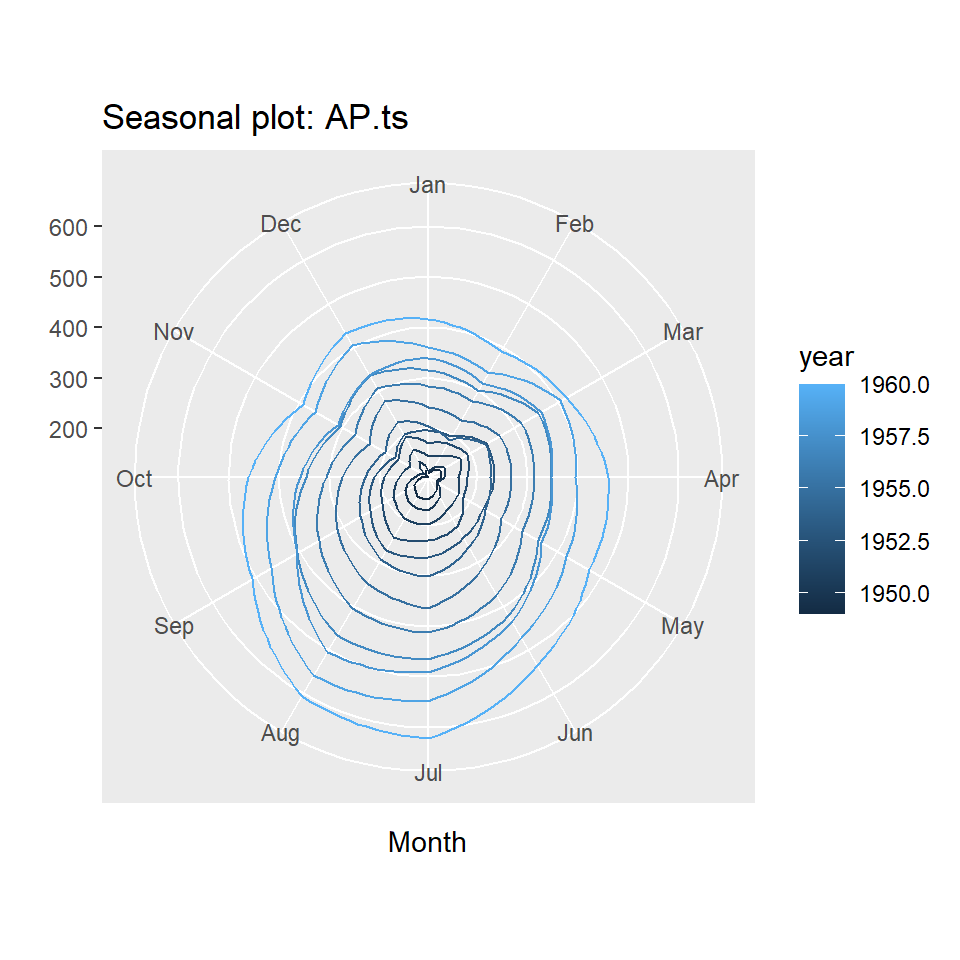
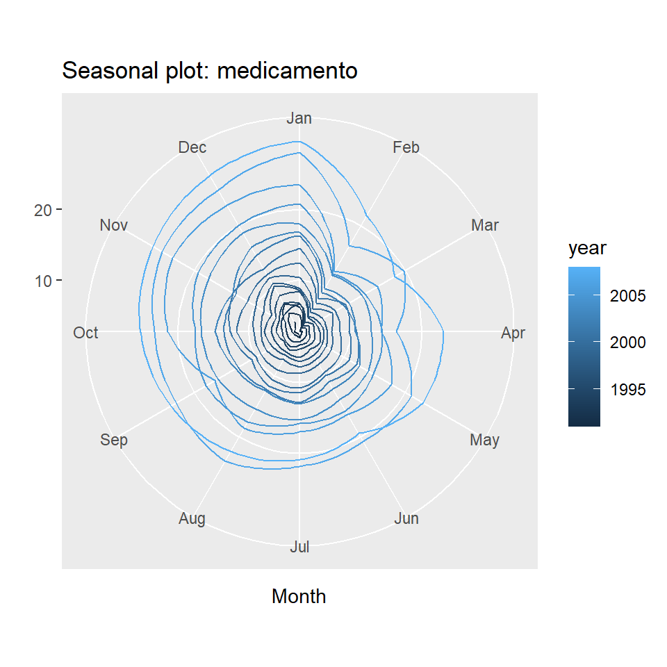
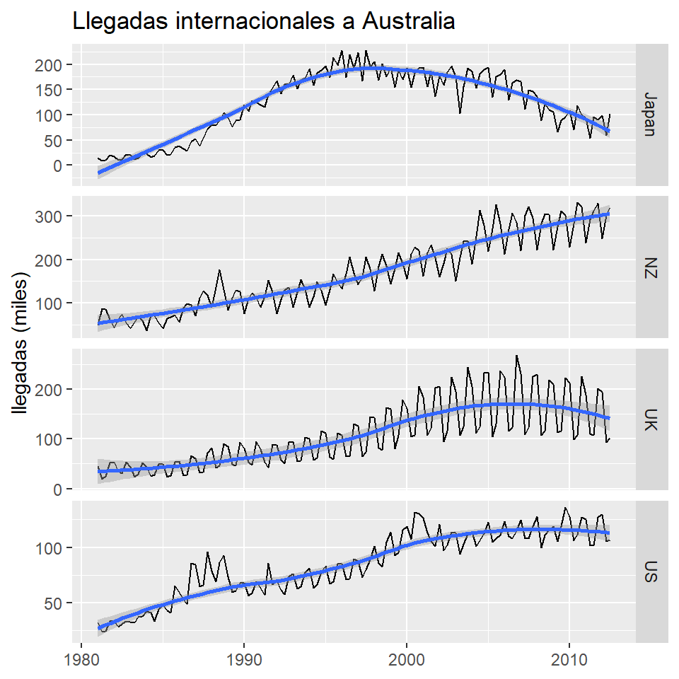

![]()
library(ggfortify)
library(forecast)
library(fpp2)
library(data.table)
library(TTR)
library(xts)
library(tidyverse)
library(lubridate)
library(DT)
library(quantmod)
library(plotly)Lab: Análisis exploratorio de series temporales
1 Librerías
2 Ejemplo: Pasajeros de avión
Totales mensuales de pasajeros de aerolíneas internacionales, de 1949 a 1960.
data("AirPassengers")
AirPassengers Jan Feb Mar Apr May Jun Jul Aug Sep Oct Nov Dec
1949 112 118 132 129 121 135 148 148 136 119 104 118
1950 115 126 141 135 125 149 170 170 158 133 114 140
1951 145 150 178 163 172 178 199 199 184 162 146 166
1952 171 180 193 181 183 218 230 242 209 191 172 194
1953 196 196 236 235 229 243 264 272 237 211 180 201
1954 204 188 235 227 234 264 302 293 259 229 203 229
1955 242 233 267 269 270 315 364 347 312 274 237 278
1956 284 277 317 313 318 374 413 405 355 306 271 306
1957 315 301 356 348 355 422 465 467 404 347 305 336
1958 340 318 362 348 363 435 491 505 404 359 310 337
1959 360 342 406 396 420 472 548 559 463 407 362 405
1960 417 391 419 461 472 535 622 606 508 461 390 432Este objeto ya está definido con la clase ts.
class(AirPassengers)[1] "ts"Vamos a convertirlo como un vector numérico.
AP <- as.numeric(AirPassengers)
class(AP)[1] "numeric"Una serie temporal es, simplemente, un vector de observaciones indexado en el tiempo.
AP.data <- data.frame(tiempo=seq_along(AP),pasajero=AP)
head(AP.data) tiempo pasajero
1 1 112
2 2 118
3 3 132
4 4 129
5 5 121
6 6 135tail(AP.data) tiempo pasajero
139 139 622
140 140 606
141 141 508
142 142 461
143 143 390
144 144 4322.1 Gráficos de los valores de la serie contra el tiempo.
- Un gráfico de dispersión no es apropiado, pues no permite ilustar la secuencia natural de los datos.
plot(AP.data$tiempo,AP.data$pasajero)
- Una forma es usar el argumento
type="l", otype="b".
plot(AP.data$tiempo,AP.data$pasajero,type="l")
ggplot(AP.data, aes(x=tiempo,y=pasajero)) + geom_line()
- Diferentes objetos en R.
str(AirPassengers) Time-Series [1:144] from 1949 to 1961: 112 118 132 129 121 135 148 148 136 119 ...str(AP) num [1:144] 112 118 132 129 121 135 148 148 136 119 ...- Se define como un objeto
ts.
AP.ts <- ts(AP, start = c(1949, 1), frequency = 12)
str(AP.ts) Time-Series [1:144] from 1949 to 1961: 112 118 132 129 121 135 148 148 136 119 ...frequency(AP.ts) #la frecuencia de la serie[1] 12cycle(AP.ts) #verificar el ciclo de cada observación Jan Feb Mar Apr May Jun Jul Aug Sep Oct Nov Dec
1949 1 2 3 4 5 6 7 8 9 10 11 12
1950 1 2 3 4 5 6 7 8 9 10 11 12
1951 1 2 3 4 5 6 7 8 9 10 11 12
1952 1 2 3 4 5 6 7 8 9 10 11 12
1953 1 2 3 4 5 6 7 8 9 10 11 12
1954 1 2 3 4 5 6 7 8 9 10 11 12
1955 1 2 3 4 5 6 7 8 9 10 11 12
1956 1 2 3 4 5 6 7 8 9 10 11 12
1957 1 2 3 4 5 6 7 8 9 10 11 12
1958 1 2 3 4 5 6 7 8 9 10 11 12
1959 1 2 3 4 5 6 7 8 9 10 11 12
1960 1 2 3 4 5 6 7 8 9 10 11 12- La función
plottoma en cuenta el tipo de objeto.
plot(AP)
plot(AP.ts)
- Se el objeto es
ts, la funciónautoplotlo detecta.
forecast::autoplot(AP.ts) + labs(x ="tiempo", y = "pasajeros (miles)", title=" Pasajeros (1949-1961)") 
ts.plot(AP.ts) # Asume una serie temporal.
ts.plot(AP) # También asume una serie temporal aunque el objeto no es ts.
2.2 Otras opciones más personalizadas
- Personalizar el gráfico usando el vector de tiempo.
year <- rep(1949:1960,each=12)
month <- rep(1:12, times=12)
AP.data <- AP.data %>% mutate('year'=year, 'month'=month)
AP.data1 <- AP.data %>%
mutate(date = make_datetime(year = year, month = month))
AP.data1$date <- as.Date(AP.data1$date)
str(AP.data1)'data.frame': 144 obs. of 5 variables:
$ tiempo : int 1 2 3 4 5 6 7 8 9 10 ...
$ pasajero: num 112 118 132 129 121 135 148 148 136 119 ...
$ year : int 1949 1949 1949 1949 1949 1949 1949 1949 1949 1949 ...
$ month : int 1 2 3 4 5 6 7 8 9 10 ...
$ date : Date, format: "1949-01-01" "1949-02-01" ...plot1 <- ggplot(AP.data1, aes(x=date,y=pasajero)) +
geom_line()
plot1
plot1 + scale_x_date(date_labels = "%m-%Y")
plot1 + scale_x_date(date_breaks = "1 month")
plot1 + scale_x_date(date_breaks = "6 month")
plot1 + scale_x_date(date_breaks = "1 year")
plot1 + scale_x_date(date_breaks = "2 year")
plot_ly(x = time(AirPassengers), y = as.numeric(AirPassengers), type = 'scatter', mode = 'lines') %>%
layout(title = "AirPassengers Time Series",
xaxis = list(title = "Time"),
yaxis = list(title = "Passengers"))2.3 Descomposición de series
Más adelante veremos paso a paso la descomposición de series temporales.
decomposeAP <- decompose(AP.ts,"multiplicative")
autoplot(decomposeAP)
¿Qué notamos en este gráfico? tendencia, ciclos, estacionalidad.
2.4 Otros gráficos útiles para estudiar el efecto estacional
- El gráfico de caja no es útil pues no muestra la secuencia temporal.
boxplot(AP.ts~cycle(AP.ts),xlab="mes", ylab = "pasajeros (miles)")
- Son más útiles los gráficos estacionales.
ggseasonplot(AP.ts, year.labels=FALSE, continuous=TRUE)
ggseasonplot(AP.ts, year.labels=FALSE, continuous=TRUE, polar = TRUE)
3 Ejemplo: Producción de cemento
Producción trimestral total de cemento en Portland en Australia (en millones de toneladas), desde el primer trimestre de 1956 hasta el primer trimestre de 2014.
cemento<-fpp2::qcement
str(cemento) Time-Series [1:233] from 1956 to 2014: 0.465 0.532 0.561 0.57 0.529 0.604 0.603 0.582 0.554 0.62 ...head(cemento) Qtr1 Qtr2 Qtr3 Qtr4
1956 0.465 0.532 0.561 0.570
1957 0.529 0.604 tail(cemento) Qtr1 Qtr2 Qtr3 Qtr4
2012 2.503
2013 2.049 2.528 2.637 2.565
2014 2.229 - Interpretación de estos gráficos.
autoplot(cemento)
ggseasonplot(cemento, year.labels=FALSE, continuous=TRUE)
ggsubseriesplot(cemento)
4 Ejemplo: gasto de medicamento anti-diabético (mensual)
Gasto mensual del gobierno (en millones de dólares) de julio de 1991 a junio de 2008.
medicamento<-fpp2::a10- Interpretación de estos gráficos.
autoplot(medicamento)
ggseasonplot(medicamento, year.labels=FALSE, continuous=TRUE)
ggseasonplot(medicamento, year.labels=FALSE, continuous=TRUE, polar = TRUE)
ggsubseriesplot(medicamento)
5 Ejemplo: Producción de cerveza en Australia
Producción trimestral total de cerveza en Australia (en megalitros) desde el primer trimestre de 1956 hasta el segundo trimestre de 2010.
cerveza<-fpp2::ausbeer- Interpretación de estos gráficos.
autoplot(cerveza)
ggseasonplot(cerveza, year.labels=FALSE, continuous=TRUE)
ggsubseriesplot(cerveza)
5.1 Gráficos de rezagos
gglagplot(cerveza,lags=16)
gglagplot(cerveza,lags=16,do.lines=FALSE)
h=1
gglagplot(cerveza,lags=h,do.lines=FALSE)
cerveza.shift<-shift(cerveza,n=h,type="lag")
cbind(cerveza,cerveza.shift) cerveza cerveza.shift
1956 Q1 284 NA
1956 Q2 213 284
1956 Q3 227 213
1956 Q4 308 227
1957 Q1 262 308
1957 Q2 228 262
1957 Q3 236 228
1957 Q4 320 236
1958 Q1 272 320
1958 Q2 233 272
1958 Q3 237 233
1958 Q4 313 237
1959 Q1 261 313
1959 Q2 227 261
1959 Q3 250 227
1959 Q4 314 250
1960 Q1 286 314
1960 Q2 227 286
1960 Q3 260 227
1960 Q4 311 260
1961 Q1 295 311
1961 Q2 233 295
1961 Q3 257 233
1961 Q4 339 257
1962 Q1 279 339
1962 Q2 250 279
1962 Q3 270 250
1962 Q4 346 270
1963 Q1 294 346
1963 Q2 255 294
1963 Q3 278 255
1963 Q4 363 278
1964 Q1 313 363
1964 Q2 273 313
1964 Q3 300 273
1964 Q4 370 300
1965 Q1 331 370
1965 Q2 288 331
1965 Q3 306 288
1965 Q4 386 306
1966 Q1 335 386
1966 Q2 288 335
1966 Q3 308 288
1966 Q4 402 308
1967 Q1 353 402
1967 Q2 316 353
1967 Q3 325 316
1967 Q4 405 325
1968 Q1 393 405
1968 Q2 319 393
1968 Q3 327 319
1968 Q4 442 327
1969 Q1 383 442
1969 Q2 332 383
1969 Q3 361 332
1969 Q4 446 361
1970 Q1 387 446
1970 Q2 357 387
1970 Q3 374 357
1970 Q4 466 374
1971 Q1 410 466
1971 Q2 370 410
1971 Q3 379 370
1971 Q4 487 379
1972 Q1 419 487
1972 Q2 378 419
1972 Q3 393 378
1972 Q4 506 393
1973 Q1 458 506
1973 Q2 387 458
1973 Q3 427 387
1973 Q4 565 427
1974 Q1 465 565
1974 Q2 445 465
1974 Q3 450 445
1974 Q4 556 450
1975 Q1 500 556
1975 Q2 452 500
1975 Q3 435 452
1975 Q4 554 435
1976 Q1 510 554
1976 Q2 433 510
1976 Q3 453 433
1976 Q4 548 453
1977 Q1 486 548
1977 Q2 453 486
1977 Q3 457 453
1977 Q4 566 457
1978 Q1 515 566
1978 Q2 464 515
1978 Q3 431 464
1978 Q4 588 431
1979 Q1 503 588
1979 Q2 443 503
1979 Q3 448 443
1979 Q4 555 448
1980 Q1 513 555
1980 Q2 427 513
1980 Q3 473 427
1980 Q4 526 473
1981 Q1 548 526
1981 Q2 440 548
1981 Q3 469 440
1981 Q4 575 469
1982 Q1 493 575
1982 Q2 433 493
1982 Q3 480 433
1982 Q4 576 480
1983 Q1 475 576
1983 Q2 405 475
1983 Q3 435 405
1983 Q4 535 435
1984 Q1 453 535
1984 Q2 430 453
1984 Q3 417 430
1984 Q4 552 417
1985 Q1 464 552
1985 Q2 417 464
1985 Q3 423 417
1985 Q4 554 423
1986 Q1 459 554
1986 Q2 428 459
1986 Q3 429 428
1986 Q4 534 429
1987 Q1 481 534
1987 Q2 416 481
1987 Q3 440 416
1987 Q4 538 440
1988 Q1 474 538
1988 Q2 440 474
1988 Q3 447 440
1988 Q4 598 447
1989 Q1 467 598
1989 Q2 439 467
1989 Q3 446 439
1989 Q4 567 446
1990 Q1 485 567
1990 Q2 441 485
1990 Q3 429 441
1990 Q4 599 429
1991 Q1 464 599
1991 Q2 424 464
1991 Q3 436 424
1991 Q4 574 436
1992 Q1 443 574
1992 Q2 410 443
1992 Q3 420 410
1992 Q4 532 420
1993 Q1 433 532
1993 Q2 421 433
1993 Q3 410 421
1993 Q4 512 410
1994 Q1 449 512
1994 Q2 381 449
1994 Q3 423 381
1994 Q4 531 423
1995 Q1 426 531
1995 Q2 408 426
1995 Q3 416 408
1995 Q4 520 416
1996 Q1 409 520
1996 Q2 398 409
1996 Q3 398 398
1996 Q4 507 398
1997 Q1 432 507
1997 Q2 398 432
1997 Q3 406 398
1997 Q4 526 406
1998 Q1 428 526
1998 Q2 397 428
1998 Q3 403 397
1998 Q4 517 403
1999 Q1 435 517
1999 Q2 383 435
1999 Q3 424 383
1999 Q4 521 424
2000 Q1 421 521
2000 Q2 402 421
2000 Q3 414 402
2000 Q4 500 414
2001 Q1 451 500
2001 Q2 380 451
2001 Q3 416 380
2001 Q4 492 416
2002 Q1 428 492
2002 Q2 408 428
2002 Q3 406 408
2002 Q4 506 406
2003 Q1 435 506
2003 Q2 380 435
2003 Q3 421 380
2003 Q4 490 421
2004 Q1 435 490
2004 Q2 390 435
2004 Q3 412 390
2004 Q4 454 412
2005 Q1 416 454
2005 Q2 403 416
2005 Q3 408 403
2005 Q4 482 408
2006 Q1 438 482
2006 Q2 386 438
2006 Q3 405 386
2006 Q4 491 405
2007 Q1 427 491
2007 Q2 383 427
2007 Q3 394 383
2007 Q4 473 394
2008 Q1 420 473
2008 Q2 390 420
2008 Q3 410 390
2008 Q4 488 410
2009 Q1 415 488
2009 Q2 398 415
2009 Q3 419 398
2009 Q4 488 419
2010 Q1 414 488
2010 Q2 374 414plot(cerveza~cerveza.shift,xlim=c(200,600),ylim=c(200,600),
xy.labels=FALSE,col=cycle(cerveza),pch=20)
cor(cerveza[-1],cerveza.shift[-1])[1] 0.6876975.2 Funcion de autocorrelacion
acf(cerveza)
ggAcf(cerveza)
acf(ausbeer, plot = FALSE)
Autocorrelations of series 'ausbeer', by lag
0.00 0.25 0.50 0.75 1.00 1.25 1.50 1.75 2.00 2.25 2.50 2.75 3.00
1.000 0.684 0.500 0.667 0.940 0.644 0.458 0.621 0.887 0.598 0.410 0.574 0.835
3.25 3.50 3.75 4.00 4.25 4.50 4.75 5.00 5.25 5.50 5.75
0.543 0.354 0.519 0.770 0.481 0.300 0.454 0.704 0.418 0.236 0.393 6 Ejemplo: Muertes por accidente en EU 1973-1978
- Interpretación de estos gráficos.
autoplot(USAccDeaths)
ggseasonplot(USAccDeaths, year.labels=FALSE, continuous=TRUE)
gglagplot(USAccDeaths,lags=16)
7 Ejemplo: Series multivariadas
arrivals<-fpp2::arrivals
str(arrivals) Time-Series [1:127, 1:4] from 1981 to 2012: 14.76 9.32 10.17 19.51 17.12 ...
- attr(*, "dimnames")=List of 2
..$ : NULL
..$ : chr [1:4] "Japan" "NZ" "UK" "US"arrivals Japan NZ UK US
1981 Q1 14.763 49.140 45.266 32.316
1981 Q2 9.321 87.467 19.886 23.721
1981 Q3 10.166 85.841 24.839 24.533
1981 Q4 19.509 61.882 52.264 33.438
1982 Q1 17.117 42.045 53.636 33.527
1982 Q2 10.617 63.081 34.802 28.366
1982 Q3 11.737 73.275 31.126 30.856
1982 Q4 20.961 54.808 53.619 33.293
1983 Q1 20.671 41.030 43.423 32.472
1983 Q2 12.235 56.155 23.421 32.369
1983 Q3 14.567 69.395 29.142 37.476
1983 Q4 24.363 58.423 51.771 38.112
1984 Q1 23.169 37.039 44.182 42.553
1984 Q2 16.296 71.564 24.920 41.277
1984 Q3 18.504 71.260 27.566 33.056
1984 Q4 29.938 54.597 48.880 44.472
1985 Q1 30.240 41.646 49.563 47.792
1985 Q2 20.280 63.668 23.867 43.070
1985 Q3 20.908 67.803 25.895 41.116
1985 Q4 36.169 72.177 54.092 65.428
1986 Q1 37.989 55.192 54.903 59.377
1986 Q2 32.366 89.073 26.089 53.283
1986 Q3 28.131 97.746 28.248 48.510
1986 Q4 47.150 94.696 66.813 85.878
1987 Q1 51.736 71.130 61.167 84.130
1987 Q2 38.254 111.416 32.400 64.347
1987 Q3 53.807 127.619 33.287 65.976
1987 Q4 71.807 117.078 72.115 96.165
1988 Q1 80.300 90.498 81.925 78.609
1988 Q2 79.596 135.435 42.091 69.306
1988 Q3 88.708 176.899 46.253 86.267
1988 Q4 103.738 131.457 90.062 92.738
1989 Q1 94.172 83.029 84.191 73.321
1989 Q2 76.462 111.748 48.709 59.819
1989 Q3 88.393 128.510 46.905 60.868
1989 Q4 90.527 126.021 93.075 67.761
1990 Q1 119.654 75.584 81.185 67.637
1990 Q2 106.965 109.472 53.693 56.153
1990 Q3 128.472 122.164 48.037 58.783
1990 Q4 124.773 111.222 94.827 69.018
1991 Q1 119.638 90.067 79.365 63.235
1991 Q2 115.049 114.050 52.961 56.691
1991 Q3 140.470 152.662 42.366 85.473
1991 Q4 153.436 123.821 89.041 66.332
1992 Q1 166.732 75.376 87.850 69.861
1992 Q2 141.886 107.369 57.261 61.501
1992 Q3 160.455 128.550 51.058 57.869
1992 Q4 160.807 136.250 93.736 73.632
1993 Q1 178.466 90.758 95.137 76.323
1993 Q2 151.904 124.972 55.661 62.718
1993 Q3 168.131 153.153 56.400 64.731
1993 Q4 172.358 130.393 103.089 77.495
1994 Q1 191.367 90.095 100.250 81.428
1994 Q2 158.207 113.799 57.464 63.554
1994 Q3 183.289 148.605 61.831 66.505
1994 Q4 188.273 127.879 115.736 78.190
1995 Q1 196.480 95.295 112.684 83.047
1995 Q2 174.307 130.073 64.209 67.448
1995 Q3 214.067 166.383 59.287 69.234
1995 Q4 197.850 146.632 111.719 85.160
1996 Q1 227.335 132.410 108.173 84.995
1996 Q2 174.325 166.735 64.632 71.005
1996 Q3 219.347 205.120 64.742 71.412
1996 Q4 192.137 167.569 129.994 89.483
1997 Q1 223.640 142.502 126.261 87.405
1997 Q2 167.269 160.522 65.146 73.061
1997 Q3 227.641 205.250 74.071 79.986
1997 Q4 195.350 177.366 145.139 89.141
1998 Q1 205.468 128.179 143.115 101.167
1998 Q2 168.520 184.943 82.747 85.384
1998 Q3 200.860 212.263 78.303 82.586
1998 Q4 176.235 183.996 163.356 104.760
1999 Q1 193.822 143.015 160.239 113.860
1999 Q2 154.860 179.577 81.152 92.494
1999 Q3 188.080 215.732 107.941 95.001
1999 Q4 170.689 190.461 179.102 115.704
2000 Q1 192.023 154.537 161.953 118.840
2000 Q2 154.701 212.401 105.394 107.313
2000 Q3 182.130 229.048 107.231 131.833
2000 Q4 192.135 221.071 205.874 130.100
2001 Q1 193.645 162.480 184.901 126.702
2001 Q2 156.303 215.840 107.454 113.471
2001 Q3 186.861 233.074 121.889 105.239
2001 Q4 136.748 203.493 202.988 101.058
2002 Q1 177.263 159.879 206.655 121.127
2002 Q2 158.357 191.215 95.564 97.016
2002 Q3 183.821 226.008 115.950 102.261
2002 Q4 196.006 213.000 224.496 114.103
2003 Q1 176.132 150.700 196.276 112.908
2003 Q2 102.633 203.400 107.563 94.212
2003 Q3 156.396 241.800 125.171 102.961
2003 Q4 192.591 243.200 243.894 112.039
2004 Q1 185.175 188.873 205.423 114.017
2004 Q2 153.363 252.262 111.924 101.065
2004 Q3 181.659 312.956 125.132 105.884
2004 Q4 190.143 278.709 233.761 112.335
2005 Q1 193.547 219.527 235.242 122.725
2005 Q2 135.461 270.782 105.370 104.542
2005 Q3 176.242 325.633 131.141 107.725
2005 Q4 180.085 282.908 237.053 111.286
2006 Q1 189.187 212.323 224.933 123.608
2006 Q2 128.920 269.964 116.211 109.865
2006 Q3 163.649 307.149 123.808 107.787
2006 Q4 169.314 286.361 269.292 114.824
2007 Q1 165.823 219.885 231.686 124.677
2007 Q2 111.484 301.654 108.543 108.089
2007 Q3 149.065 320.737 122.734 107.738
2007 Q4 146.673 295.727 226.031 119.189
2008 Q1 136.544 222.770 230.109 128.066
2008 Q2 88.879 282.076 107.430 99.471
2008 Q3 121.951 304.979 115.758 111.243
2008 Q4 109.858 303.481 218.864 115.636
2009 Q1 106.123 221.287 210.109 119.158
2009 Q2 65.748 275.761 113.973 105.507
2009 Q3 88.371 311.431 116.517 118.979
2009 Q4 95.214 301.983 223.178 136.094
2010 Q1 109.072 228.162 213.568 127.535
2010 Q2 71.253 281.791 99.497 105.974
2010 Q3 117.876 330.812 108.208 111.615
2010 Q4 99.987 320.897 225.395 127.002
2011 Q1 92.889 239.103 188.560 125.264
2011 Q2 53.397 292.072 110.212 101.814
2011 Q3 96.467 311.994 107.089 101.925
2011 Q4 89.900 329.470 202.240 127.150
2012 Q1 98.180 247.910 194.640 129.520
2012 Q2 59.760 301.880 92.970 105.700
2012 Q3 101.900 319.840 101.690 106.540autoplot(arrivals)
autoplot(arrivals, facets = TRUE)
autoplot(arrivals, facets = TRUE) +
geom_smooth() +
labs(title = "Llegadas internacionales a Australia",
y = "llegadas (miles)",
x = NULL)
8 Ejemplo: Promedio diario industrial Dow Jone
getSymbols("^DJI",from = "2016/12/31",
to = "2018/12/31",
periodicity = "daily")[1] "DJI"y <- DJI$DJI.Close
library(xts)
plot(y)
#note el comportamiento en diferentes segmentos de tiempo.
plot(y[1:200])
plot(y[1:100])
9 Paquetes en R y extensiones
Existen una variedad de formas de definir objetos de series temporales en R y distintos paquetes para graficar.
https://cran.r-project.org/web/views/TimeSeries.html
Les puede servir: